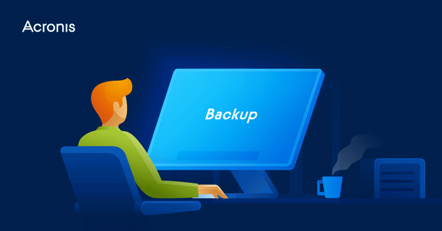

2.1 Definición general de auditoría
La auditoría es un proceso sistemático y objetivo de evaluación de la información financiera, operativa y de otro tipo, para proporcionar una opinión independiente sobre la exactitud y la integridad de la información, así como para identificar oportunidades de mejora.
La auditoría es una herramienta importante para garantizar que las organizaciones cumplan con las leyes y regulaciones aplicables, así como para proteger los intereses de los stakeholders, incluidos los accionistas, los empleados, los clientes y los proveedores.
La auditoría también puede proporcionar una evaluación objetiva de la eficacia y la eficiencia de los controles internos, los procesos y los sistemas, y puede identificar debilidades y oportunidades de mejora.
En el contexto de la auditoría de sistemas computacionales, la auditoría se enfoca en evaluar la seguridad y la integridad de los sistemas de información y los procesos de tecnología de la información en una organización, para identificar debilidades y oportunidades de mejora, y para proporcionar una opinión independiente sobre la eficacia y la eficiencia de los controles de seguridad y procesos de TI.
La auditoría de sistemas computacionales es esencial para garantizar que la información crítica de la organización esté protegida contra las amenazas y los riesgos de seguridad, y para asegurar la disponibilidad, integridad y confidencialidad de la información en los sistemas de información de la organización.
2.2 Objetivos particulares de cada tipo de auditoría
Los objetivos particulares de cada tipo de auditoría en sistemas computacionales pueden variar dependiendo de la naturaleza y alcance de la auditoría. Aquí se presentan algunos objetivos comunes de cada tipo de auditoría:
1. Auditoría de seguridad: El objetivo principal de la auditoría de seguridad es evaluar la eficacia y la eficiencia de los controles de seguridad en los sistemas de información de la organización. Los objetivos particulares pueden incluir identificar vulnerabilidades y debilidades en los controles de seguridad, evaluar el cumplimiento de las políticas y los estándares de seguridad, y evaluar la capacidad de la organización para detectar y responder a incidentes de seguridad.
2. Auditoría de cumplimiento: El objetivo principal de la auditoría de cumplimiento es evaluar el cumplimiento de las leyes, regulaciones y políticas aplicables a la organización. Los objetivos particulares pueden incluir evaluar la eficacia de los controles de cumplimiento, identificar debilidades en los procesos de cumplimiento y evaluar la capacidad de la organización para cumplir con las obligaciones legales y regulatorias.
3. Auditoría de gestión: El objetivo principal de la auditoría de gestión es evaluar la eficacia y la eficiencia de los procesos de gestión de la organización. Los objetivos particulares pueden incluir evaluar la eficacia de los procesos de planificación, control y supervisión, identificar debilidades en los procesos de gestión y evaluar la capacidad de la organización para alcanzar sus objetivos.
4. Auditoría de sistemas: El objetivo principal de la auditoría de sistemas es evaluar la eficacia y la eficiencia de los sistemas de información de la organización. Los objetivos particulares pueden incluir evaluar la capacidad de los sistemas para proporcionar información precisa y oportuna, identificar debilidades en los sistemas de información y evaluar la capacidad de la organización para gestionar y mantener sus sistemas de información.
5. Auditoría forense: El objetivo principal de la auditoría forense es investigar y analizar posibles fraudes o delitos en los sistemas de información de la organización. Los objetivos particulares pueden incluir identificar y preservar evidencia digital, analizar la integridad de los datos y los sistemas, y proporcionar informes y recomendaciones a la dirección y a las autoridades legales.

2.3 Principales áreas, actividades y resultados que se auditan
La auditoría en sistemas computacionales puede abarcar diversas áreas, actividades y resultados que se auditan en una organización. Aquí se presentan algunas de las principales:
1. Seguridad de la información: Esta área incluye la evaluación de los controles de seguridad de los sistemas de información de la organización, como la autenticación, la autorización, la encriptación, el control de acceso, la gestión de contraseñas y la protección contra virus y malware. Las actividades de auditoría pueden incluir la evaluación de políticas y procedimientos de seguridad, la revisión de la configuración de seguridad de los sistemas, la revisión de registros de auditoría y la realización de pruebas de penetración para identificar posibles vulnerabilidades.

2. Continuidad del negocio: Esta área incluye la evaluación de la capacidad de la organización para mantener la operatividad de sus sistemas de información en caso de interrupciones o desastres. Las actividades de auditoría pueden incluir la evaluación de planes de contingencia y recuperación, la revisión de procedimientos de backup y restauración, la revisión de la infraestructura de red y la evaluación de la capacidad de los sistemas para recuperar datos críticos.
3. Cumplimiento regulatorio: Esta área incluye la evaluación del cumplimiento de las leyes y regulaciones aplicables a la organización, como la privacidad de los datos, la protección de datos personales, el cumplimiento de leyes antilavado, entre otros. Las actividades de auditoría pueden incluir la revisión de políticas y procedimientos de cumplimiento, la evaluación de la capacitación del personal en temas de cumplimiento, la revisión de registros de cumplimiento y la evaluación de los controles de cumplimiento en los sistemas de información de la organización.
4. Gestión de proyectos de TI: Esta área incluye la evaluación de los procesos de gestión de proyectos de TI de la organización, como la planificación, ejecución y control de proyectos de TI. Las actividades de auditoría pueden incluir la evaluación de políticas y procedimientos de gestión de proyectos de TI, la revisión de planes de proyecto y de su ejecución, la evaluación de la capacidad de la organización para gestionar proyectos de TI y la identificación de posibles debilidades en los procesos de gestión de proyectos de TI.
5. Cumplimiento de estándares y buenas prácticas: Esta área incluye la evaluación del cumplimiento de los estándares y buenas prácticas de la industria, como los estándares ISO, COBIT, ITIL, entre otros. Las actividades de auditoría pueden incluir la evaluación del cumplimiento de los estándares y buenas prácticas en los sistemas de información de la organización, la revisión de políticas y procedimientos de cumplimiento, la identificación de posibles debilidades en los procesos de cumplimiento y la evaluación de la capacidad de la organización para implementar y mantener los estándares y buenas prácticas de la industria.
2.4 Normas generales de auditoría
Las normas generales de auditoría son un conjunto de principios fundamentales que guían la práctica de la auditoría, incluyendo la auditoría en sistemas computacionales. Estas normas están diseñadas para asegurar que los auditores realicen su trabajo de manera consistente y profesional, independientemente de la empresa o sector en el que trabajen.
Las normas generales de auditoría incluyen la objetividad, la integridad, la confidencialidad, la competencia y la debida diligencia profesional. La objetividad se refiere a la capacidad del auditor para ser imparcial y justo en su evaluación del sistema de información. La integridad se refiere a la honestidad y honradez del auditor en su trabajo. La confidencialidad se refiere a la protección de la información confidencial del cliente durante el proceso de auditoría. La competencia se refiere a la capacidad técnica y profesional del auditor para realizar su trabajo de manera efectiva. Y la debida diligencia profesional se refiere a la necesidad de que el auditor sea cuidadoso, preciso y minucioso en su trabajo.
Otras normas generales de auditoría incluyen la planificación adecuada y la supervisión efectiva del trabajo de auditoría. La planificación adecuada implica una comprensión completa del sistema de información y los riesgos asociados, así como una evaluación adecuada de los controles existentes. La supervisión efectiva del trabajo de auditoría implica asegurar que se sigan los procedimientos establecidos y que se realice un seguimiento adecuado de los hallazgos y recomendaciones.
Además, las normas generales de auditoría requieren que el auditor documente adecuadamente su trabajo y que se comunique claramente con la dirección y otros interesados sobre los hallazgos y recomendaciones resultantes de la auditoría. Esto incluye la preparación de informes de auditoría claros y concisos, que proporcionen información útil y relevante para la toma de decisiones de la dirección y otras partes interesadas.
2.5 Métodos, técnicas, herramientas y procedimientos de auditoría
En la auditoría de sistemas computacionales, los métodos, técnicas, herramientas y procedimientos utilizados deben estar diseñados específicamente para la revisión de sistemas y tecnologías de la información. Estos métodos y técnicas deben ser apropiados para evaluar la eficiencia, efectividad, confidencialidad, integridad, disponibilidad y cumplimiento de los sistemas y tecnologías de la información.
Entre las técnicas y herramientas más comunes utilizadas en la auditoría de sistemas se encuentran la revisión documental, la observación, la entrevista, la realización de pruebas y la revisión de registros y reportes generados por los sistemas de información.
Los procedimientos de auditoría se refieren a los pasos específicos que se siguen durante una auditoría. Estos procedimientos incluyen la identificación de los objetivos y alcance de la auditoría, la recopilación de información, la evaluación de los riesgos, la revisión de los controles internos, la realización de pruebas, la evaluación de los resultados y la elaboración de informes.
Las herramientas y técnicas de auditoría asistidas por computadora (CAATs, por sus siglas en inglés) también se utilizan en la auditoría de sistemas. Estas herramientas pueden automatizar la revisión y análisis de grandes volúmenes de datos, lo que permite a los auditores identificar tendencias, patrones y anomalías que pueden requerir una investigación adicional.
En general, los métodos, técnicas, herramientas y procedimientos utilizados en la auditoría de sistemas deben estar basados en principios y estándares internacionales reconocidos, como el marco COBIT, el marco COSO, el estándar ISO/IEC 27001 y las normas internacionales de auditoría.
2.6 Estructuras de organización de las empresas y áreas dedicadas a la auditoría
La estructura de organización de las empresas y áreas dedicadas a la auditoría pueden variar dependiendo del tamaño y complejidad de la organización. En general, las empresas cuentan con un departamento de auditoría interna, encargado de evaluar los sistemas de control interno, riesgos y cumplimiento de políticas y normativas. También pueden contar con auditores externos contratados por la empresa para realizar evaluaciones independientes y objetivas de los sistemas de información y seguridad.
El departamento de auditoría interna puede estar conformado por un equipo de auditores con diferentes especializaciones, como la auditoría de sistemas, contabilidad, finanzas, operaciones, entre otros. Este equipo puede estar liderado por un director o gerente de auditoría interna, que es el encargado de establecer las políticas, normas y procedimientos de auditoría, así como coordinar y supervisar el trabajo de los auditores.
En algunas organizaciones, también existe la figura del Comité de Auditoría, que es un grupo de directivos independientes encargados de supervisar el trabajo del departamento de auditoría interna y los auditores externos. Este comité tiene como objetivo garantizar la independencia, objetividad y calidad de las auditorías realizadas.
En cuanto a las áreas dedicadas a la auditoría de sistemas, pueden ser internas o externas a la empresa. En el caso de las áreas internas, se encargan de la evaluación de los sistemas de información y seguridad de la organización, así como de la detección y prevención de fraudes y errores. Mientras que las áreas externas pueden ser empresas especializadas en auditoría de sistemas o consultores independientes contratados por la empresa para realizar auditorías específicas.